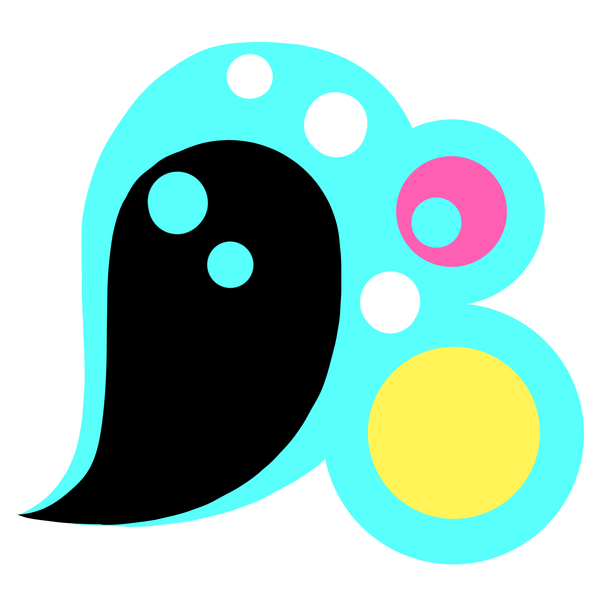
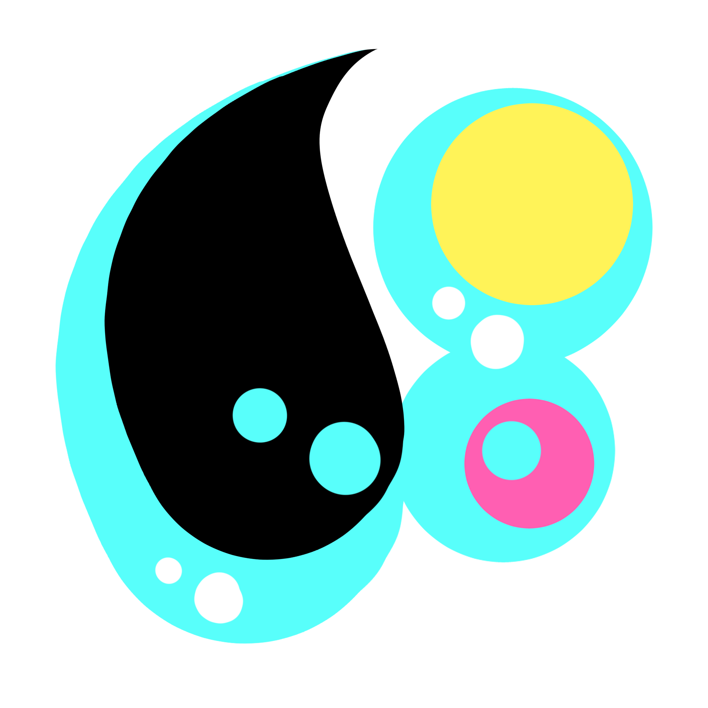
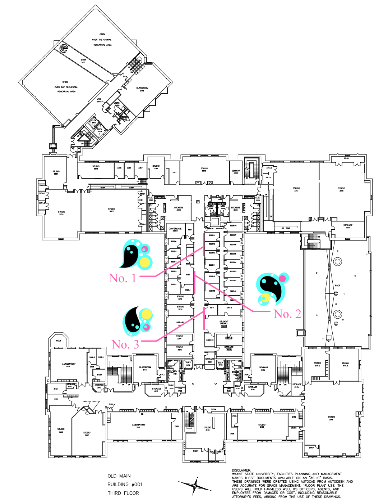

Wayne State is a diverse place full of stark juxtaposition, and what better to represent that than the grand Old Main building with new modern art lining its halls?
Old Main is a beautiful historic building on Wayne State campus. Within its walls are years worth of memories, both through spirit, but also physically. Its age lends to its grandeur but also its tedium. The world has grown around it. To liven up this old monument, I propose a bright and colorful, movement filled art exhibition.
This exhibition is three large paintings aiming to breathe new life and color into the main hallway of the third floor of Old Main. The paintings are 3 variations of similar concepts in the same bold colors. They evoke feelings of rhythm and spirit, with simply 3 shapes and an outline. While they all share similar forms, each one has a different personality. They are pink, yellow, cyan, and black, not only alluding back to Old Main's roots in the arts, but also the bold and bright people who frequent the building.
For a lot of the students of the arts, it isn’t just one building they go to, instead it's one they come to live in as much as their home. Within a year I had a class on every floor. With 2 more to go, I know I will grow perhaps not tired, but very well acquainted with each twist and turn of the old hallways. Something like this could be what brightens my day each time I pass. A monumental building needs monumental things, and this art exhibition could be the pep in the step of all those who inhabit its thriving ecosystem.
- Al Himebaugh
Piece No. 1Al Himebaugh Motion 1 Digital art, 12 x 12, 12/11/2024 |
Piece No. 2Al Himebaugh Motion 2 Digital art, 12 x 12, 12/11/2024 | Piece No. 3Al Himebaugh Motion 3 Digital art, 12 x 12, 12/11/2024 |
|---|
Site of each of the three pieces to be displayed
